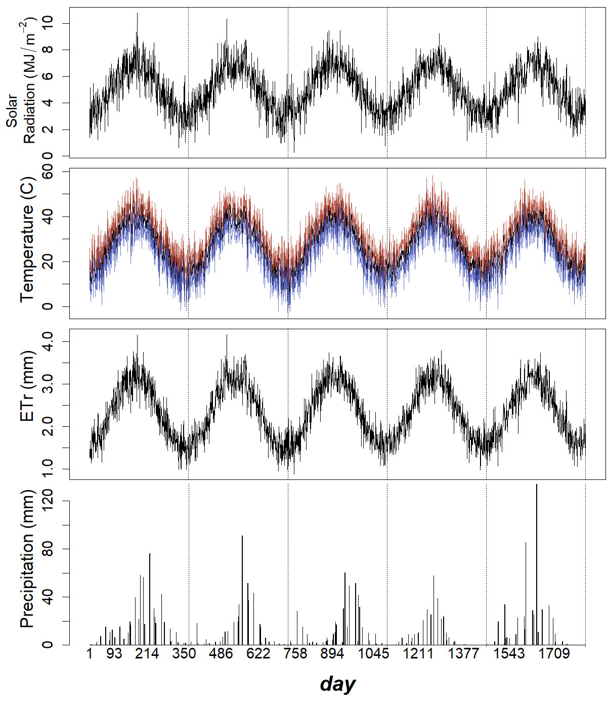

output_dir <- "output"
plot_file_format <- c("png", "eps")[1] # modify index number to change format3 Example of simulation outputs of the Weather model for 5 years
Choose file format for generated figures:
Load source file containing the R implementation of the Weather model:
source("source/weatherModel.R")Initialisation using the default parametrisation, based on data from Rakhigarhi (example location, see Fig. 1):
SEED <- 0
YEAR_LENGTH <- 365 # ignoring leap year adjustment
NUM_YEARS <- 5
NUM_DAYS <- NUM_YEARS * YEAR_LENGTH
weather_model <- initialise_weather_model(seed = SEED, year_length = YEAR_LENGTH)Show table with parameter values:
source("source/extract_params.R")
# Extract initial parameters
initial_params <- list(
names = c("seed", "year_length", "albedo", "southern_hemisphere"),
values = unlist(weather_model$PARAMS[1:4])
)
# Extract remaining parameters
remaining_params <- lapply(names(weather_model$PARAMS)[5:length(weather_model$PARAMS)],
function(name) extract_params(weather_model$PARAMS[[name]], name))
# Combine all parameters
all_params <- list(
names = c(initial_params$names, unlist(lapply(remaining_params, `[[`, "names"))),
values = c(initial_params$values, unlist(lapply(remaining_params, `[[`, "values")))
)
# Create the table
params_values <- cbind(all_params$names, all_params$values)
row.names(params_values) <- NULL
knitr::kable(params_values,
format = "html",
col.names = c("parameter", "values"),
align = c("l", "r"))| parameter | values |
|---|---|
| seed | 0 |
| year_length | 365 |
| albedo | 0.4 |
| southern_hemisphere | 0 |
| temperature - annual_max | 40 |
| temperature - annual_min | 15 |
| temperature - daily_fluctuation | 5 |
| temperature - daily_lower_dev | 5 |
| temperature - daily_upper_dev | 5 |
| solar - annual_max | 7 |
| solar - annual_min | 3 |
| solar - daily_fluctuation | 1 |
| precipitation - annual_sum_mean | 400 |
| precipitation - annual_sum_sd | 130 |
| precipitation - plateau_value_mean | 0.1 |
| precipitation - plateau_value_sd | 0.05 |
| precipitation - inflection1_mean | 40 |
| precipitation - inflection1_sd | 20 |
| precipitation - rate1_mean | 0.15 |
| precipitation - rate1_sd | 0.02 |
| precipitation - inflection2_mean | 200 |
| precipitation - inflection2_sd | 20 |
| precipitation - rate2_mean | 0.05 |
| precipitation - rate2_sd | 0.01 |
| precipitation - n_samples_mean | 200 |
| precipitation - n_samples_sd | 5 |
| precipitation - max_sample_size_mean | 10 |
| precipitation - max_sample_size_sd | 3 |
Run model:
weather_model <- run_weather_model(weather_model, num_years = NUM_YEARS)Set colours for maximum and minimum temperature:
max_temperature_colour = hsv(7.3/360, 74.6/100, 70/100)
min_temperature_colour = hsv(232/360, 64.6/100, 73/100)Plot time-series:
# Helper functions
plot_solar_radiation <- function(solar_radiation, num_days, year_length) {
plot(1:num_days, solar_radiation,
type = "l", xlab = "", xaxt = 'n', ylab = "")
mark_end_years(num_days, year_length = year_length)
}
plot_temperature <- function(temperature, max_temperature_colour, min_temperature_colour, num_days, year_length) {
plot(1:num_days, temperature,
type = "l", xlab = "", xaxt = 'n', ylab = "",
ylim = c(floor(min(weather_model$daily$temperature_min)),
ceiling(max(weather_model$daily$temperature_max))))
lines(1:num_days, weather_model$daily$temperature_max,
col = adjustcolor(max_temperature_colour, alpha.f = 0.8))
lines(1:num_days, weather_model$daily$temperature_min,
col = adjustcolor(min_temperature_colour, alpha.f = 0.8))
mark_end_years(num_days, year_length = year_length)
}
plot_ETr <- function(ETr, num_days, year_length) {
plot(1:num_days, weather_model$daily$ETr, type = "l",
ylab = "", xlab = "", xaxt = 'n')
mark_end_years(num_days, year_length = year_length)
}
plot_precipitation <- function(precipitation, num_days, year_length) {
par(mar = c(2, 1, 0.1, 0.1))
barplot(weather_model$daily$precipitation,
ylab = "", xlab = "", xaxt = 'n')
mark_end_years(num_days, year_length = year_length, offset = 1.2)
abline(v = num_days * 1.2, lty = 3)
}
plot_time_axis <- function(num_days, graphic_scale, font_rescale, margin_text_rescale) {
par(mar = c(1, 1, 0, 0.1))
plot(c(1, num_days), c(0, 1), ann = FALSE, bty = 'n', type = 'n', xaxt = 'n', yaxt = 'n')
axis(3, at = 1:num_days, tck = 0, lwd = 0)
mtext("day", side = 1, line = -1,
font = 4, cex = graphic_scale * (1.7 + font_rescale + margin_text_rescale))
}
# Main plotting function
plot_weather_simulation <- function(weather_model, num_days, year_length, graphic_scale, font_rescale, axis_text_rescale, margin_text_rescale, max_temperature_colour, min_temperature_colour) {
layout(matrix(c(1:10),
nrow = 5, ncol = 2, byrow = FALSE),
widths = c(1, 10),
heights = c(10, 10, 10, 12, 2))
y_labs <- c(expression(paste(
" Solar\nRadiation (", MJ/m^-2, ")")),
"Temperature (C)", "ETr (mm)", "Precipitation (mm)")
par(cex = graphic_scale)
# First column
par(mar = c(0, 0, 0, 0))
for (i in 1:4) {
plot(c(0, 1), c(0, 1), ann = FALSE, bty = 'n', type = 'n', xaxt = 'n', yaxt = 'n')
text(x = 0.5, y = 0.5 + (i > 2) * 0.1, font = 4,
cex = graphic_scale * (0.6 + 0.1 * (i > 1) + font_rescale),
srt = 90,
labels = y_labs[i])
}
plot(c(0, 1), c(0, 1), ann = FALSE, bty = 'n', type = 'n', xaxt = 'n', yaxt = 'n')
# Second column
par(mar = c(0.2, 1, 0.5, 0.1), cex.axis = graphic_scale * (0.6 + axis_text_rescale))
# 1: Solar radiation
plot_solar_radiation(weather_model$daily$solar_radiation, num_days = num_days, year_length = year_length)
# 2: Temperature
plot_temperature(weather_model$daily$temperature, num_days = num_days, year_length = year_length,
max_temperature_colour = max_temperature_colour, min_temperature_colour = min_temperature_colour)
# 3: Reference evapotranspiration
plot_ETr(weather_model$daily$ETr, num_days = num_days, year_length = year_length)
# 4: Precipitation
plot_precipitation(weather_model$daily$precipitation, num_days = NUM_DAYS, year_length = year_length)
# 5: x-axis title
plot_time_axis(num_days = num_days, graphic_scale = graphic_scale, font_rescale = font_rescale, margin_text_rescale = margin_text_rescale)
}
# Main execution
plot_name <- file.path(output_dir, paste0("Fig3-weather_modelExample.", plot_file_format))
if (plot_file_format == "png") {
graphic_scale <- 2
font_rescale <- axis_text_rescale <- margin_text_rescale <- 0
png(plot_name, width = graphic_scale * 600, height = graphic_scale * 700)
} else if (plot_file_format == "eps") {
graphic_scale <- 1.2
font_rescale <- 0.1
axis_text_rescale <- -0.1
margin_text_rescale <- -0.5
extrafont::loadfonts(device = "postscript")
grDevices::cairo_ps(filename = plot_name, pointsize = 12,
width = graphic_scale * 6, height = graphic_scale * 7,
onefile = FALSE, family = "sans")
} else {
stop("Unsupported file format")
}
plot_weather_simulation(weather_model, num_days = NUM_DAYS, year_length = YEAR_LENGTH,
graphic_scale = graphic_scale, font_rescale = font_rescale,
axis_text_rescale = axis_text_rescale, margin_text_rescale = margin_text_rescale,
max_temperature_colour = max_temperature_colour, min_temperature_colour = min_temperature_colour)
dev.off()svg
2 knitr::include_graphics(plot_name)